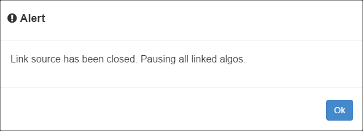
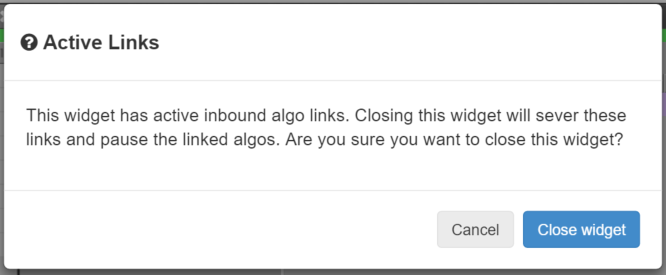
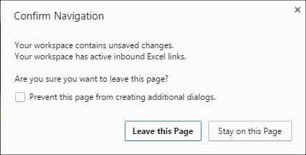

When you launch algos that use linked data from the Excel connection, TT requires the connection to be established during the life of the algo. As a safety precaution, TT automatically pauses all running algos with Excel links if the connection is broken while the workspace is open. If you close the workspace, however, the algos will not be paused and will continue to run.
If you exit the Excel application while an algo using links is running, TT displays an alert dialog.

The Autotrader or Algo Dashboard widgets keep track of algos that rely on Excel links, so the widget that launches an algo must remain open for the algo to continue running. If you try to close it while algos are running, TT displays the following dialog to confirm your choice.

If you try to close a workspace that contains running algos with Excel links, TT displays a dialog similar to the following.

Caution If you choose to Leave this Page, the workspace closes. However, the algos will not be paused and will continue to run. Also, the linked values will be converted to static values and will not change while the algos continue to run.